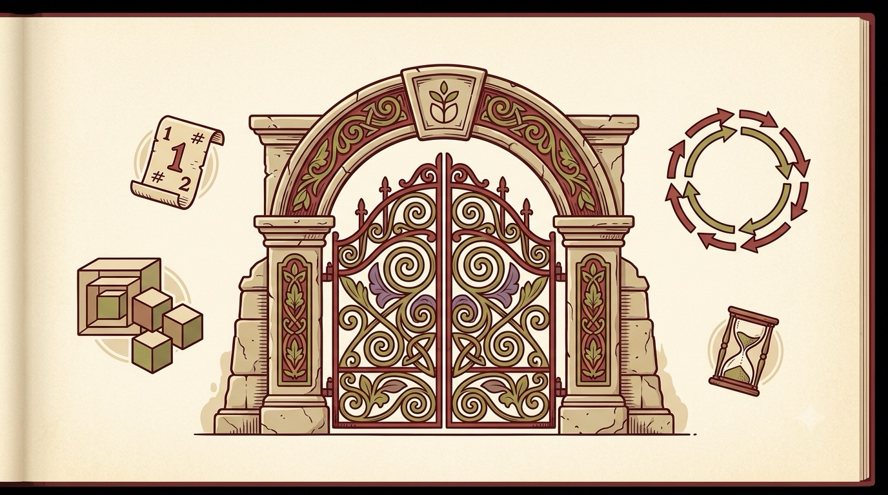

A BookBank Field Guide · Kernel Curiosities
Interesting Linux
Eleven tricks the kernel has been hiding in plain sight —
and the syscalls that unlock them.

A warm, editorial illustration in the style of an illuminated manuscript crossed with a modern technical diagram: an ornate old gate labeled subtly with a kernel motif, surrounded by floating sigils that hint at a numbered ticket (a file descriptor), a ring of paired arrows (io_uring's submission/completion rings), a set of nested boxes (namespaces), and a small hourglass (a timer). Warm paper palette — cream background, oxblood-red accent, olive and moss-green highlights, a touch of muted purple — generous whitespace, soft depth, flat vector style with fine linework like woodcut printing, no readable text baked in. Mood: an old, dignified codex that happens to be about UNIX system calls — playful but not childish. ~1280x720px, 16:9 landscape; keep the composition centred with safe margins, it is letterboxed into a 16:9 box.
Generate with your image agent, then drop the file here.
A field guide for curious Linux users and working software engineers — grounded in man7.org, kernel.org, and LWN.net.
The Path
What's inside
Eleven lesser-known Linux features, each explained from first principles: what it is, the problem it quietly solves, a short idiomatic example, and at least one real system that leans on it. No prior kernel experience assumed — just curiosity and a terminal.
- Everything Is a File Descriptoreventfd · timerfd · signalfd · pidfd
- Safer Ways to Open a FileO_PATH · O_TMPFILE · O_NOFOLLOW
- Zero-Copy Data Movementsplice · vmsplice · sendfile · tee
- Anonymous Memory Filesmemfd_create · file sealing
- Epoll's Sharp Edgesedge- vs level-triggered · EPOLLONESHOT
- io_uring: Async I/O Without the SyscallsSQE/CQE rings · SQPOLL
- Namespaces: Your Own Private LinuxPID & mount namespaces · bind mounts
- Kernel Tuning Secretsswappiness · THP · PSI
- userfaultfd: Handling Your Own Page Faultspost-copy migration · lazy restore
- copy_file_range: Let the Kernel Copyreflinks · server-side copy
- Landlock: Sandbox Yourself, No Root Neededunprivileged self-restriction
- CheatsheetEvery syscall & flag, one page